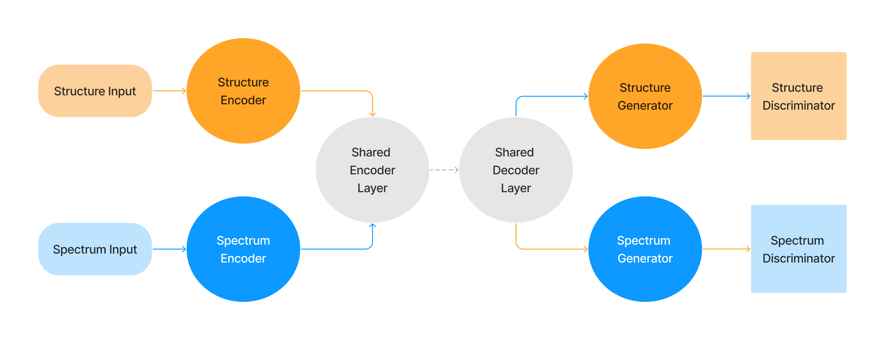

Autoencoder Generative Adversarial Network
The aegan_mlp model trains both structure and spectra at the same time using two autoencoders or generators that have shared parameters and two discriminators. The discriminators are used to encourage better performance from the generators, whilst the generators try to fool the discriminators. This structure allows different paths through the model for either data type. It can be used to reconstruct the input data or predict the output data for either structure or spectra without changing the model. All constituent parts of the model are multilayer perceptron networks. Aside from input and output shape, the dimension of the linear layers is currently fixed by the value hidden_size. The generative and discriminative parts of the model can have different loss functions, learning rates and optimisers specified using the options loss_gen, loss_dis and lr_gen, lr_dis and optim_fn_gen, optim_fn_dis, respectively.
Network Diagram:

Network Architecture:
Generative Layers
- Structure Encoder & Spectrum Encoder
n_hl_gennumber of layers contructed as {linear, batch normalisation, activation}. Final layer has no activation.
- Shared Encoder & Shared Decoder
n_hl_sharednumber of layers contructed as {linear, batch normalisation, activation}. Final layer has no activation.
- Structure Generator & Spectrum Generator
n_hl_gennumber of layers constructed as {linear, batch normalisation, activation}. Final layer has no activation.Discriminative Layers
n_hl_disnumber of layers contructed as {linear, batch normalisation, activation}. Final layer has Sigmoid activation. The recommended loss function for the discriminatorloss_disis the Binary Cross Entropy with Logits Loss specified using thebceoption.
Training the Model:
Training of the AEGAN is achieved as alternating updates of the generative and discriminative parts of the model. The loss for the generative part is calculated as the sum of the scaled difference between model output and target output for both reconstructions and predictions for spectra and structure. The individual losses are currently scaled by the max value of the model output to compensate for the scaling differences between spectra and structure.
The discriminator part of the model tries to predict whether the data is real - i.e. from the training set - or fake - produced from the generative part of the model. The total loss is the sum of the real loss and fake loss. The fake loss is calculated as the difference between the predicted labels for the real and fake data produced by the generator. The real loss is calculated as the the difference between the predicted labels for the fake data and the true label for the data.
Example hyperparameters:
hyperparams:
model: aegan
batch_size: 64
n_hl_gen: 2
n_hl_shared: 2
n_hl_dis: 2
hidden_size: 256
activation: prelu
loss_gen:
loss_fn: mse
loss_args:
loss_reg_type: null
loss_reg_param: 0.001
loss_dis:
loss_fn: bce
loss_args: null
loss_reg_type: null
loss_reg_param: 0.001
lr_gen: 0.01
lr_dis: 0.0001
optim_fn_gen: Adam
optim_fn_dis: Adam
dropout: 0.0
weight_init_seed: 2023
kernel_init: xavier_uniform
bias_init: zeros